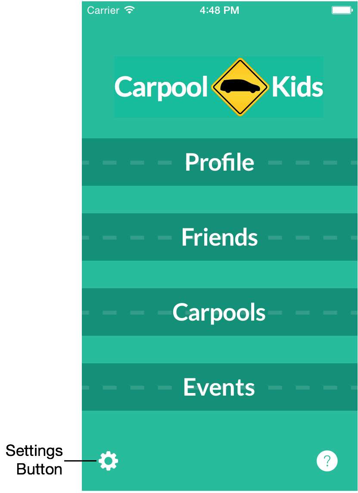

Settings
Use the "gear" icon on the main menu to reach the app's settings.

- Download Events for: Use this setting to determine how far into the future events should be downloaded from the cloud.
- E-Mail Enabled/Disabled: Use the toggle to determine if event updates are sent via e-mail. If you have Push Notifications enabled, you may want to disable e-mail.
- Calendar Subscriptions: Subscribe to calendars for each of your Carpools or to a separate calendar with just your driving events.
- Notifications & Privacy: Takes you to the iOS settings for the Carpool-Kids app, where you can change your Notifications and Privacy settings. This is useful if you chose not to enable Push Notifications when you first installed the App and wish to enable them now.
- E-Mail Us a Question/Suggestion: Opens a new e-mail message addressed to "info@carpool-kids.com"
- Tweet Us a Question/Suggestion: If you have an active Twitter account setup on your device, tapping this option will open a new Tweet sheet with "@CarpoolKids" in the text field.
- Visit us on Facebook: If you have an active Facebook account setup on your device, tapping this option will open the Carpool-Kids App in the Facebook App.

Tapping on "Calendar Subscriptions" opens the Calendars settings view. From this view you can subscribe to a calendar of your driving events, or to a calendar for any active Carpools.
When you eventually delete or leave a carpool, your calendar subscription is *not* deleted. To remove the subscription, you must go to the iOS settings for Mail, Contacts & Calendars > Subscribed Calendars and manually delete the subscription.